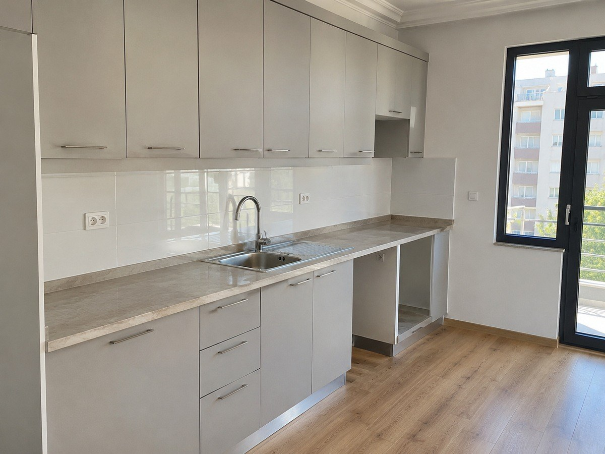

Demirbaş listesi
Moda Cad. 24/6, Kadıköy · 6 kayıt · Ev sahibi tarafından girilmiş örnek bilgiler
KombiÇalışıyor
Marka · TermorayModel · TR-24 KondensSeri no · TR24-004817
Seçili kayıt



Mutfak dolabıHafif iz
Marka · Yerleşik, özel imalatModel · Üst ve alt modülSeri no · Yok
Detayı göster

Anahtar takımıTeslim edildi
Adet · 3 anahtarİçerik · Ana kapı, bina kapısı, posta kutusuSeri no · Yok
Detayı göster
Kayıt özeti
Demirbaş kayıtları, ev sahibinin girdiği bilgilerdir ve kiracı olarak her kayıt için not ekleyebilir veya itiraz bildirebilirsiniz. Çıkışta bu liste, giriş teslim tutanağıyla birlikte karşılaştırma için kullanılır.
6Toplam kayıt
4Teslimde onaylı
2Not içeren kayıt
0Açık itiraz
Olağan kullanım ve eskime
Cihazların zamanla yaşadığı olağan eskime, hasar olarak değerlendirilmez. Bir arıza fark ederseniz notunuzu tarihiyle kaydetmeniz, ileride her iki tarafa da kolaylık sağlar.
KombiÇalışıyor
MarkaTermoray
ModelTR-24 Kondens
Seri noTR24-004817
KonumMutfak
Son bakım kaydıEylül 2026 (ev sahibi beyanı)
Durum geçmişi
Yıllık bakım yapıldı, çalışıyorEylül 2026 · Ev sahibi
Teslim tutanağında onaylandı1 Mart 2026 · Elif K.
Kayıt oluşturuldu17 Şubat 2026 · Mehmet Y.
Not ekle veya itiraz bildir
Kayıtla ilgili gözleminizi yazın. Notunuz ev sahibine iletilir ve değişiklik geçmişinde tarihiyle saklanır.